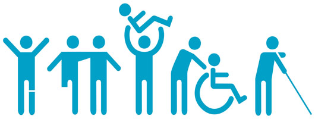

My vision is to open a bussiness for the special need community. As a mother of children with special needs and an educator who has worked with a few students that have special needs, I see and understand some of the daily stuggles they live with. I want a place for special needs individuals, where they will not be judge for doing the things that they enjoy and still be excepted. My special needs facilaty will proved the love and safty many mothers, fathers, and family members are looking for when it comes to their loved ones.
